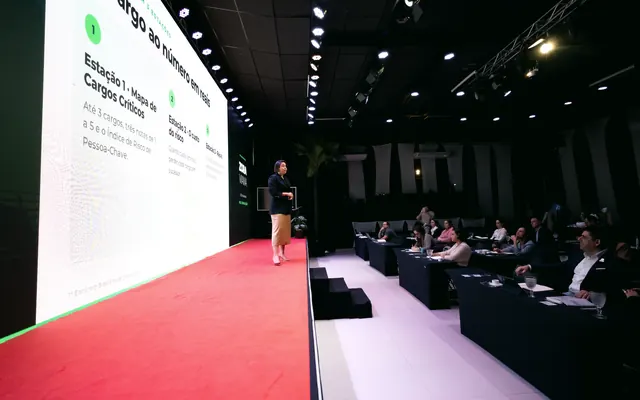

No seu horário.
EaD: você estuda de onde estiver e encaixa as aulas na rotina de quem tem meta para bater. As atividades presenciais são programadas e avisadas com antecedência.
Prévia: o formulário ainda não está ligado a nenhum destino. Nada é enviado.
Tecnólogo em Gestão Comercial · EaD
Graduação em vendas com método
Graduação EaD em 4 semestres, com diploma de nível superior, para crescer no comercial com método, e não só com dom.
Em pouco mais de um minuto: o que é a graduação, o que você aprende e como funciona.
O vídeo está em produção e entra aqui em breve.
Cada disciplina termina com um entregável feito a partir dos seus desafios profissionais. Você aprende e já usa.
Você sai com a estratégia comercial do seu negócio no papel e um roteiro de conversa da abordagem ao fechamento.
Você sai com um painel com os números que mostram onde a sua venda trava.
Você sai com o seu CRM padronizado e um checklist de negociação testado no seu dia a dia.
Você sai com uma pesquisa de mercado aplicada e um plano para aumentar conversão e ticket.
E um projeto de extensão por semestre, aplicado ao seu comercial: diagnóstico, plano de ação e resultado medido antes e depois.
Sem método, o esforço vira oscilação.
Com método, vira previsibilidade.
EaD: você estuda de onde estiver e encaixa as aulas na rotina de quem tem meta para bater. As atividades presenciais são programadas e avisadas com antecedência.
Travou numa dúvida às 11 da noite? A MestrIA responde na hora, com base no conteúdo do curso.
O que você estuda vai direto para o seu trabalho. A sala de aula é o seu comercial.
Tutoria, mentoria acadêmica e atendimento de segunda a sexta.
Funil, negociação, indicadores, CRM, dados e IA desde o primeiro semestre. Nada de grade genérica com uma aula de vendas no fim.
Você aprende a escolher a ferramenta que ajuda a vender, não a que está na moda.
Cada matéria termina com algo que você aplica no seu comercial na mesma semana.

+1.000empresas parceiras
A FEX é a faculdade das empresas que ensinam. É com elas que a gente aprende o que o mercado pede de quem vende.
Quem vai te ensinar: doutores, mestres e gente que viveu o mercado.
Ficha on-line, em poucos minutos.
On-line, de até 60 minutos, sobre um dos temas propostos. Basta nota 6 para ser aprovado.
Em até 48 horas.
Matrícula digital, com o link que chega para você.
Inscrições até10 de dezembro de 2026
Matrículas até18 de dezembro de 2026
Início das aulas
Separe 60 minutos e uma internet estável: depois de aberta, a prova não pode ser pausada.
Deixe seus dados e receba no WhatsApp a mensalidade e as condições da turma 2027.
Quero receber as condiçõesSim. O Tecnólogo em Gestão Comercial é um curso superior de graduação, na modalidade EaD. Ao concluir, você recebe o diploma de Tecnólogo em Gestão Comercial, emitido pela Faculdade FEX Educação.
Quatro semestres, ou seja, dois anos. Se precisar de mais tempo, o prazo máximo para concluir é de seis semestres.
Dá. É um curso EaD, e as atividades presenciais são programadas e avisadas com antecedência. E os projetos usam os seus desafios profissionais como material de estudo.
Não. Quem já vende aproveita os projetos no próprio dia a dia; quem quer entrar no comercial sai com base, método e portfólio.
Quem já concluiu o ensino médio.
Deixe seus dados e a nossa equipe te passa a mensalidade e as condições pelo WhatsApp.
É a inteligência artificial do conteúdo do curso. Você pergunta e ela responde na hora, com base no que você está estudando.
Pode. A pós-graduação exige graduação concluída, e o tecnólogo é uma graduação.
O vestibular 2027 está aberto. A inscrição é on-line e leva poucos minutos.
Quero fazer a graduação